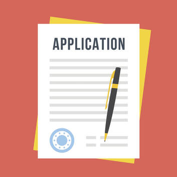

ABŠda Okamagyñ 7 Sany Sebäpleri (7 Reasons to Study in the USA)
Dasary yurda okamana gitmakaniz, oz isleyan zadynyzy doly tanap hem dusunup bilmek ilkinji etmeli zadynyzdyr… QS
uniwersitet wezipesinin aydysyna gora, Amerikanyn Birlesen Statlaryndaky yokary okuw jaylarynyn beryan bilimi
dunya boyunca in onde bolup gelyar. Amerikada, her bir okuwcyn isleyan akademikisine we medeniyetine gora, durli
durli saylamalary berilya. Indi siz name ucin Amerkada okasam gowy bolar diyip ozunizden sorayansynyz…Ine bu
yerde su soraga jogap bermegi bilen size 7 sany sebapleri jemledik...
ABŞdaky Bilimiň Dürli-Dürli Kategoriýalary (Different Levels of Study in the US)
Turkmence:
ABŞda näme okajagyňa görä, prosesi basga. Käbir kisi ABSda Bakalawr okuwyňy okamagy isleyä, käbir kisi bolsa
Aspirantura yada Doktoruna okuwy okamagy isleyä. Şu geljeki gunlerde, her bir okuwyň/uguryn prosesine sereders
we her haysy hakda öwreners.
English:
Based on what you want to study in the U.S, the process is different. Some of you might want to pursue your
Undergraduate Studies in the U.S. while some of you might want to pursue your Graduate or Doctoral studies. In
these upcoming days, we will look at and learn about each route.
ABŠda Okuwçy Bolmagynyñ Prosesi: Bakalawr Okuwy (Process of Becoming a Student in the US
Undergraduate studies)
Amerkada 2 ýylda alynýan bakalawr diplomy sizi yoriteleşdirilen karýera gowy taýynlap biler. Yada, wagtyňyzy 4
ýyla uzaldyp, hemme zerur sapaklary alyp eliňize “Bakalawr Diplomasyny” alyp bilersiňiz.
Diplomlar:
-Associate Sungaty (associate of arts), Associate Ylym (associate of science)
Geçirmek/Owürtmek Prosesi:
-Egerde okuwçy bolup başga yerlerde okamagy isleseňiz, 4-ýyllyk kolleje yada uniwersitete sowalnama doldurup
tabşyryp bilersiňiz. Tabşyran okuwynyz ilkinji okuwynda gazanan kreditlerine seredip, haysy kreditleri bu
taze 4yyllyk okuwynyza gecirip bolyanlary saylarlar.
Koplenç, Aspirantura okuwyny dynyp, doktorantura okuwyna başlap bolya. Bu okuwda, oz isleginize gora esasy belli
bir ugura uns berip okalýa.
Amerkadaky Doktorantura Diplomlary:
Filosofiýa Doktory, (doctor of arts), Bilim Doktory, Ylahyýet Doktory, Medesina Doktory, Dermanhana Doktory,
Fiziki Bejeriş Doktory, Yuridik Doktory...
2 Yyllykdan 4 Yyllyga Geçmegi (The Two Year-to-Four Year Transfer)
Name üçin okuwçylar ilki başda jemgyýet ýada kiçi kolleji saýlayalar?
Kop 4 ýyllyk uniwersitetleriň oz 2 ýyllyk kollejleri ýakynynda bar. 2 ýyllyk uniwersitetler koplenç Jemgyýet
Kollej yada Kici Kollej diýip atlandyrylýa. Eliňize Associate Diplomy alyp bilýaniz ýada bu okuwda alan
kreditleriňizi 4 ýyl uniwersitete gidip gecirip bilýaniz we iň sonyňda bakalawr diplom almak ücin...
ABŠda Okamak Uçin Vizalar (Types of Visas to Study in the USA)
ABŞda okamak uçin hays vizany almaly?
ABŞda okamak uçin 3 hili student viza berilip bolýa: F1 Viza, J1 Viza, M1 Viza. F1 we J1 vizalar ABŞda okap
ýörkan, islemäge rugsat berýäler, emma M1 Viza berenok. Her vizaň öz duzgunleri we proseslary bar...
ABŞda Studentski Viza Bilen Ýaşamak (Living with a Visa in the US
Turkmence:
ABŞda okap we ýasamak üçin tölegler hakda pikirlenip başlaňyzda, yatda saklaň: ABŞda işläp we bu
gazanjyňyza bagly bolup bilmersiniz. Immigrasiyanyň student viza bilen işlemek hakda düzgünleri gaty berk,
we finans resurslarynyzy olara görkezenizde, geljeki girdejä bagly bolup bolanok. Viza almak üçin
sowalnamaňyzda gorkezýan girdejiňiz belli bolmaly we okuwyňyza/ýaşayşynyza tölap biljegini görkezmeli.
ABŞda gowy edip okap we yaşamak üçin, öňünden planynyzy düzmagi maslahat berýäs. ABŞ-da öwrenmäge,
görmäge, we gezmäge zatler we ýerler kan. Özüniz öňünden gowy edip planlasdyryň finans ýagdaylarynyzy!
English:
As you begin to think about funding sources for your educational and living expenses in the United States,
remember that you cannot count on working in the United States unless you have been granted a teaching or
research assistantship. Immigration regulations are very strict with respect to working while carrying a
student visa, and when you submit evidence of your financial resources, you cannot rely on potential income.
The income on which you base your application must be assured, and it must be equal to or exceed the costs
of the first year of your studies.
Careful long-term and short-term planning is necessary to ensure that you will have a rewarding
educational experience in the United States. If you are realistic about your financial needs, you will be
better able to enjoy the exciting academic and cultural experience of living and learning in the United
States.

ABŞ Viza Almana Sowalnama Tabşyrmagy (Applying for American Visas)
Turkmence:
-Student viza almak üçin sowalnamynyzy dolduranyzda, öz isleýan/giren okuwyňyzyň düzgünleri hakda
öwrenmeli bolarsynyz. Su zatlary yatda saklaň:
1. Okuwyn Akademiki Düzgünleri we Zerurlyklary
-Her okuwyn öz düzgünleri we gerekli zatlary bar okuwçylary üçin. Öz isleyän okuwyňyzyň düzgünleri we
gerekli zatlary hakda okap öwrenin. Meselem: köp okuwlar standart egzaminlardan belli bir baha almaly we
su bahalary okuwa görkezmeli synanşanyzda. Her okuw hakda gowy liňk: USA School Search
2. Finans Durnuklyk
-ABŞda ýaşamaga işsiz özuňi finans tarapdan alyp çykjagyny görkezmeli
3. Saglyk Strahowaniýe
-Käbir ýagdayda, öz saglygyňyza kömek gerek bolanda “saglyk strahowaniýe” eliňizde bardygny görkezmeli
bolar
English:
-When putting together your application for a student visa, you will first need to research the
admission policy for your university. Keep the following items in mind:
1. Academic Eligibility
-Every school has different academic eligibility criteria. Your school will tell you what their
requirements are. If you are still in the process of researching different schools, you can use the USA
School Search to research general academic standing and test scores.
2. Financial Stability
-You will need to show that you can support yourself without having to work.
3. . Health Insurance
-You may have to show proof of health insurance in order to cover any medical expenses should you need
any medical assistance.